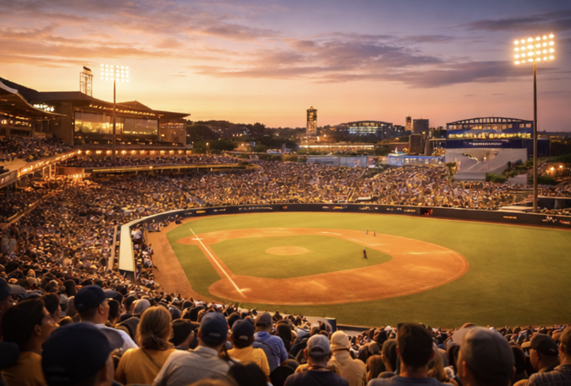
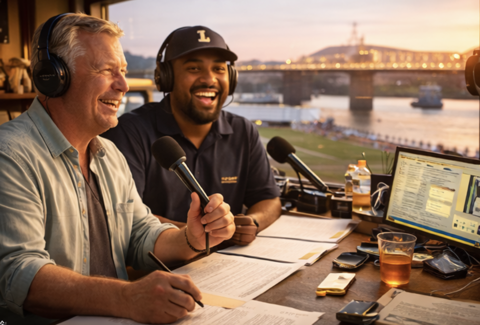
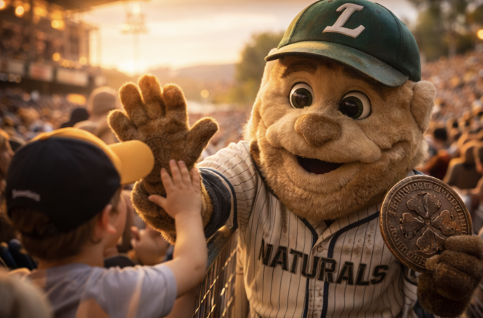
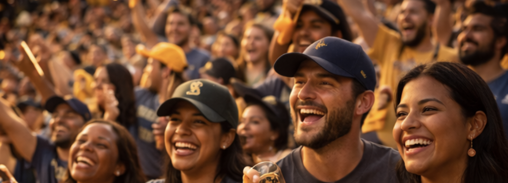

The Naturals play like a band that never rushes the chorus. They work the count, take the extra base, and let the river air do the rest. Louisville isn’t loud — it’s confident. Their edge is rhythm: small advantages stacked until the other side starts making mistakes.

The Riverwalk Grounds. Brick and brass details, wide concourses, and a warm glow that hits the infield right before sunset. The right-field line opens toward the water; the lights come on slowly like they’re making up their mind.

Voice of the Naturals. Cal calls games like he’s telling you a good secret. He’s not a hype man — he’s a storyteller. When a hitter gets lucky, Cal doesn’t deny it. He respects the bounce.

A friendly, slightly-worn human-worn mascot built around the team’s superstition: coin flips, lucky charms, and “never step on the line.” Not magical — just beloved. You can tell the costume has history.

The crowd leans forward like they’re listening for something. Families, older season-ticket regulars, kids with rally towels. Gold accents everywhere — not flashy, just warm.
| 2B | Marvin “Mint” Holloway |
| C | Rico Duvall |
| P | Silas “Left Bank” Mercer |